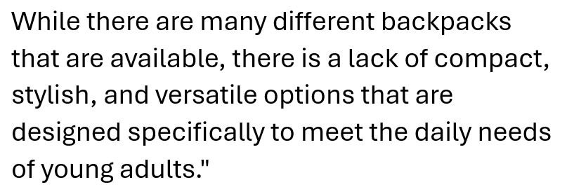
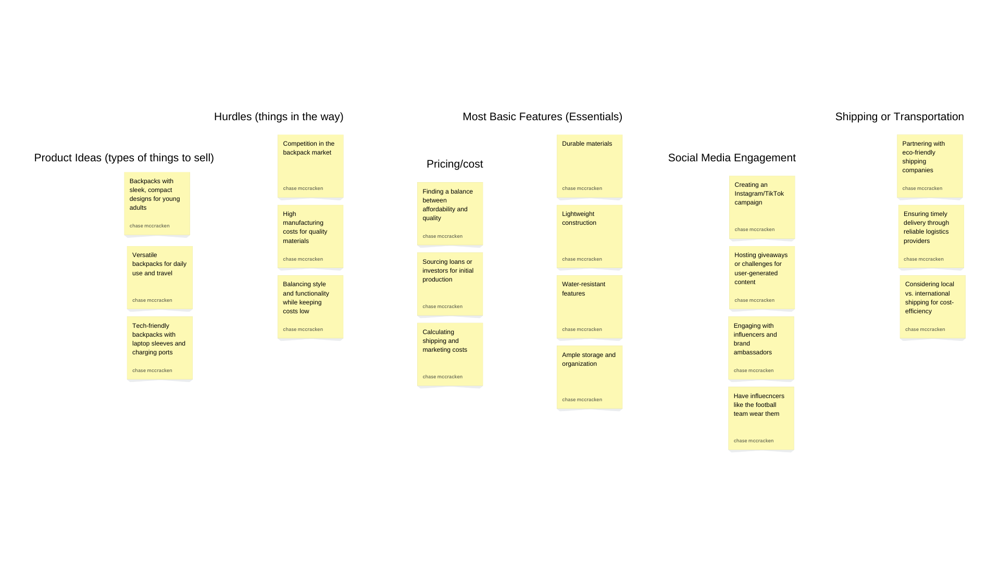

Problem Statement
While there are many different backpacks that are available, there is a lack of compact, stylish, and versatile options that are designed specifically to meet the daily needs of young adults.
Affinity Diagram
This description is the affinity diagram on backpacks and how I would improve them to versatile backpacks versus the now unappealing backpacks I did this using 6 clusters and 20 sticky notes.
Sketch

These sketches are three different designs from how apps started off to what I'm hoping to make a now modern app and then futuristic app's storyboard as well as how the layout and feel would look.
Prototype

A video and walkthrough of my prototype app/wedsite in development on a piece of paper